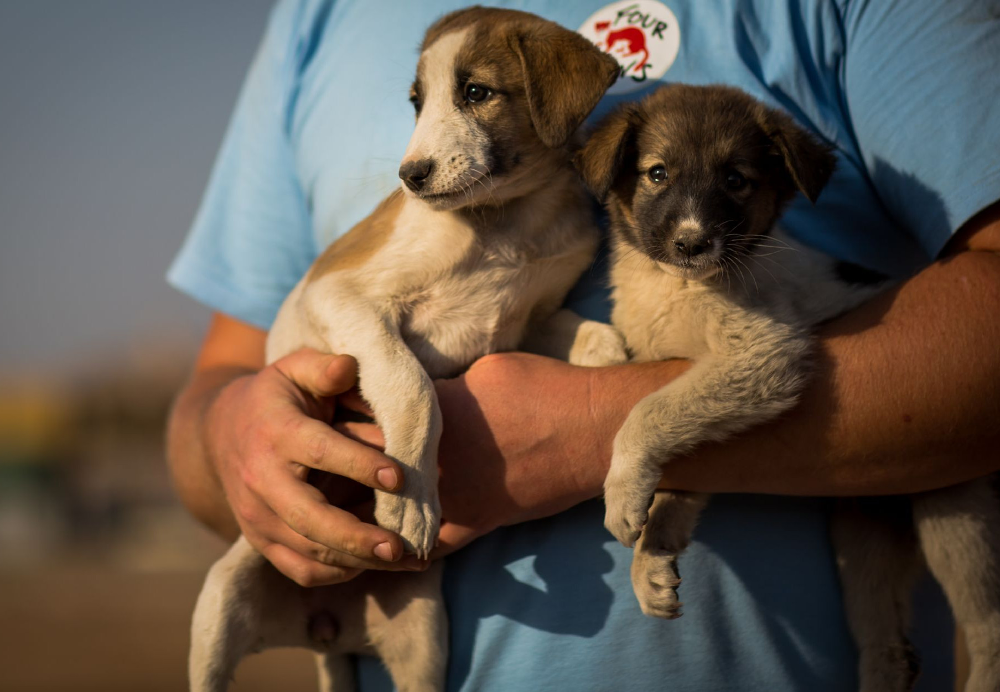
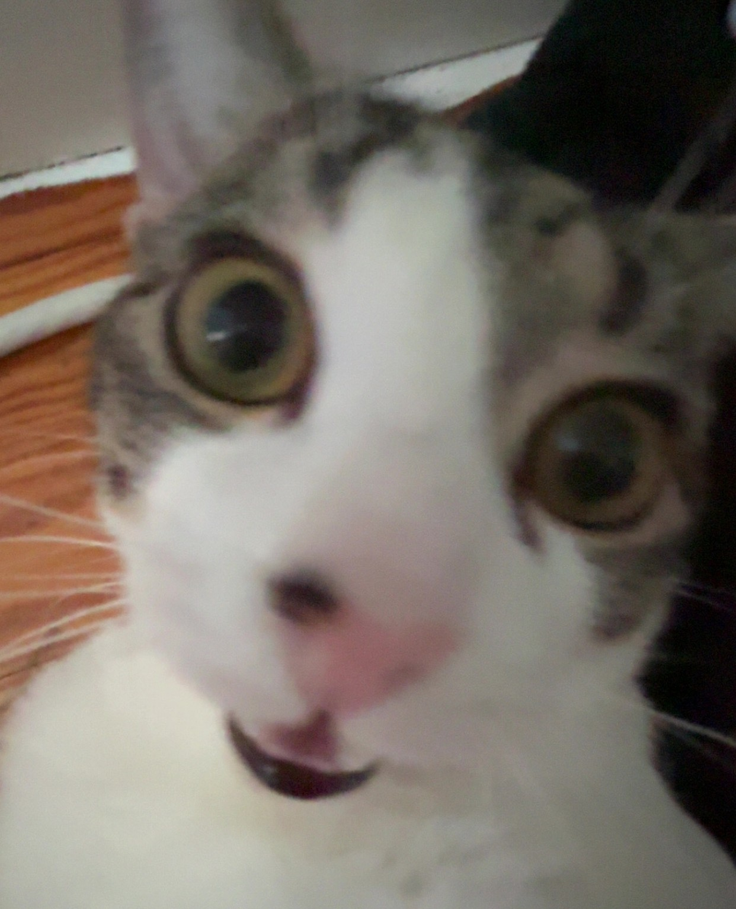

We are an organization that started in 2018. We seek for animals in need and provide them medical treatment if need and find them a new forever home.

Our mission is to rescue any animals in need. We also do volunteer work for our animals in need.
We keep our animals comfortable, safe, and make sure they will have a forever home.
Since 2018, we have rescued over 30,000 animals.
If you see a stray animal or would like to voluunteer, please go see our
volunteer and contact page!

Name: Sett AKA "The Boss" (from the game League of Legends)
Age: 1 years old
Description: Has the zoomies late at night, purposely attacks me because why not, and loves chicken. Gives me a chance to share my cat.